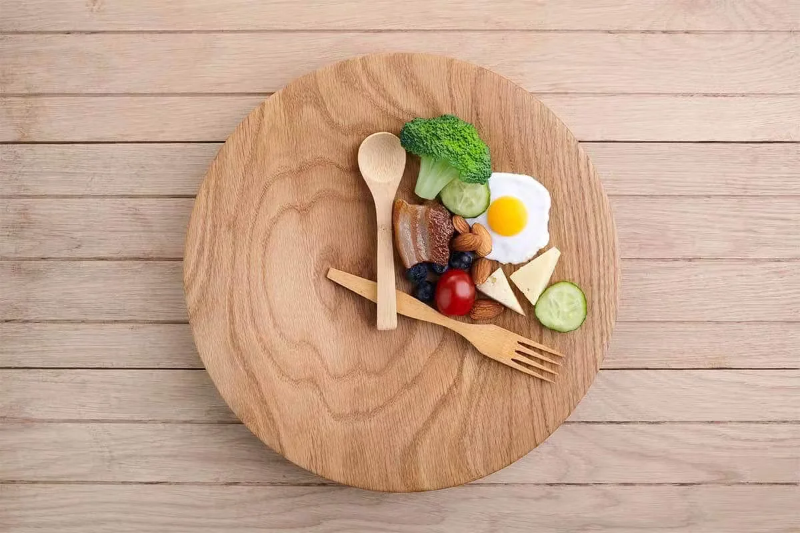

Cuando hablamos de alimentación, de NUTRICIÓN, justamente lo primero que debemos saber es el concepto real de nutrición. Siempre nos han enseñado que es lo mismo comer, alimentarse, nutrirse....pero no es así! Comer vendría siendo el simple hecho de masticar e ingerir "cosas"; introducir elementos externos a nuestro sistema digestivo.
Ahora bien, cuando nos referimos a NUTRICIÓN, estamos implicando procesos que suceden en tu cuerpo después de obtener, asimilar y digerir los NUTRIENTES que componen a los alimentos. Por tanto, todo lo que comemos no necesariamente nos nutre y por eso es fundamental conocer la diferencia entre comer y nutrirnos.
Existen varias formas de nutrirnos (el sol es una especie de nutriente en forma de hormona) y a continuación, te presentamos las que se consideran dos de las mejores existentes que nos han acompañado por miles de años y una actual que nos permite tener mejor calidad de vida.
Dieta Cetogénica
La Nutirición de nuestros ancestros.
Dieta Paleolítica
Otra forma de Nutrición ancestral.
Dieta Flexible
Una alternativa que permite nutrirnos.
Ayuno Intermitente

Definimos ayuno intermitente como la renuncia voluntaria a los alimentos durante un periodo específico para distribuir las comidas de una manera distinta a la tradicional.
Habitualmente, no hay normas estrictas de lo que se puede ingerir en las horas en las que no se hace ayuno, ni cuantas calorías. Hay que destacar que la base del ayuno intermitente es la restricción de horarios, no de ingesta calórica. Son muchas las formas de hacer ayuno intermitente entre las cuales se puede seleccionar aquella que mejor funcione según nuestro estilo de vida o preferencias.
Por lo general, todos los ayunos son apropiados si aportan beneficios a nuestra salud. Cada persona es distinta y puede presentar diversas reacciones, por ello es relevante atender a las señales de nuestro organismo.
Lo esencial es conseguir una relación sana con la alimentación, escuchar lo que necesita nuestro cuerpo y disfrutar de las comidas saludables.
Conoce mas sobre el Ayuno Intermitente con Carlos Stroo